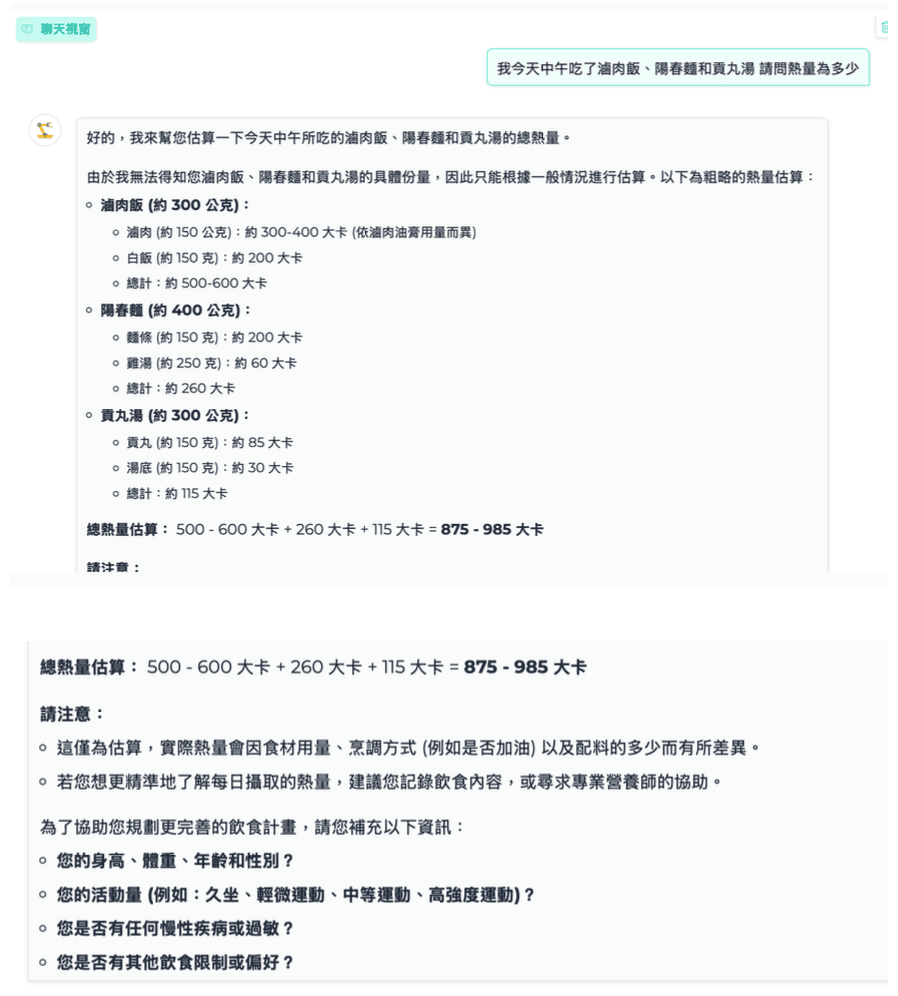
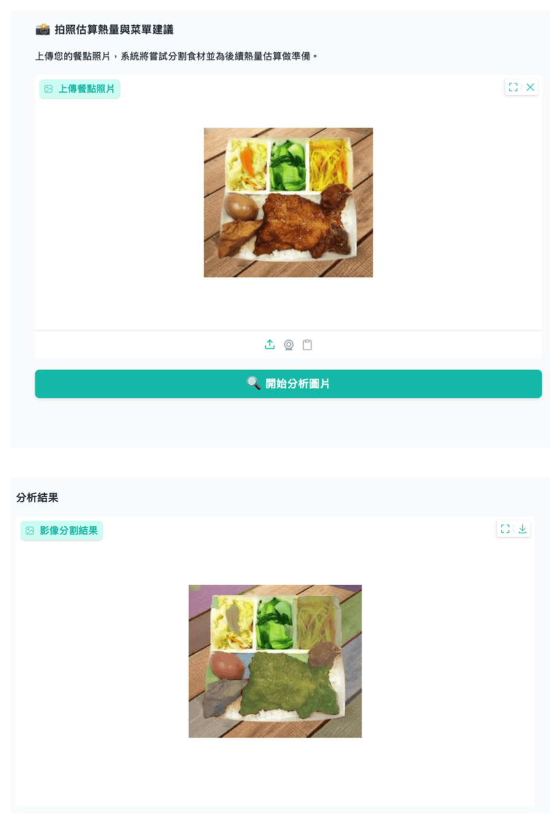
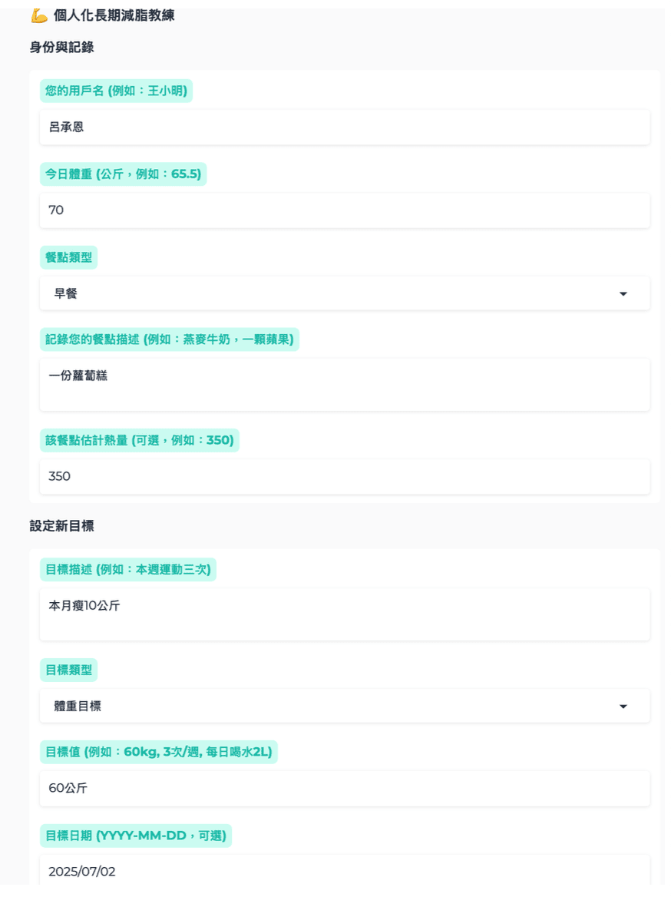

整合熱量分析、圖片辨識熱量與 AI 飲食教練三大功能，把分散的健康查詢工具收進同一套系統，讓日常健康管理的門檻大幅降低。
想管理飲食健康，通常要用到好幾個工具：查熱量用一個 App、拍照估熱量要另一個、想問「我這樣吃合理嗎」又要去找別的地方。這些工具各自為政，沒有辦法形成一個完整的使用流程。
這個專案的出發點是：把最常用的三個健康查詢動作整合在一個系統裡，讓使用者不需要切換工具，從查詢、記錄到獲得建議都在同一個介面完成。
輸入食物名稱，整合營養資料庫與 LLM，快速返回熱量、蛋白質、脂肪、碳水等完整數據。
上傳餐點照片，AI 自動辨識食物種類並估算熱量，不需要逐一手動查詢。
結合 RAG 知識庫，根據使用者的飲食目標與紀錄，給出個人化的飲食建議與規劃方向。



把原本需要跨多個 App 才能完成的健康管理流程，收進同一套系統。使用者不再需要在多個工具之間切換，也不需要手動彙整資料——系統自動保存紀錄並作為後續建議的依據。